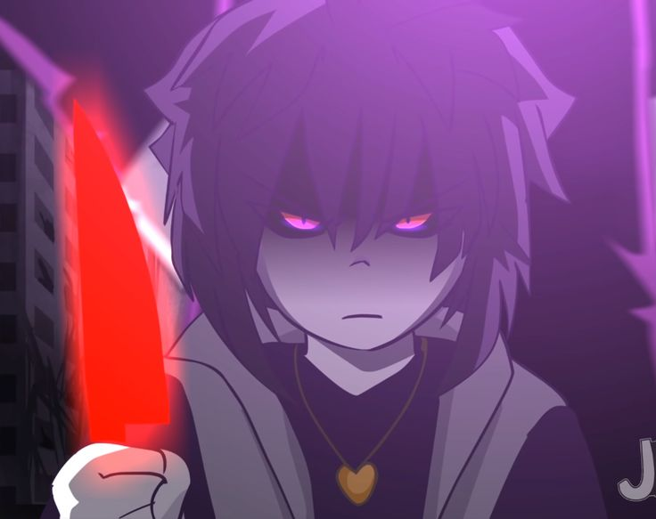

frisk
frisk era o irmão de chara que sempre esteve com ele e gaster desde o inicio
frisk nunca gostou dos resets de gaster mas nunca fez nada por medo de gaster fazer alguma coisa com ele ou com seu irmão
depois de tanto tempo passando pelas mesmas coisas toda hora frisk decide se juntar com chara para roubar os poderes de gaster e fazer o próprio mundo deles do jeito que eles quiserem

poderes
- sobscrever
- ciar facas de magia
- super resistência